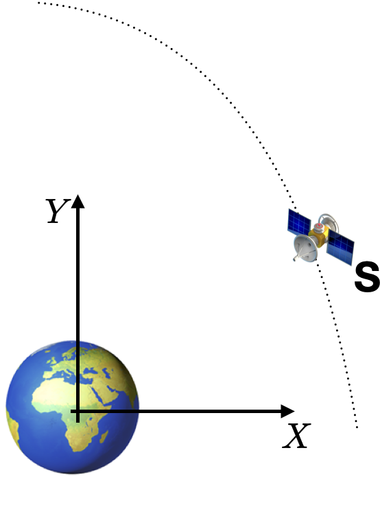
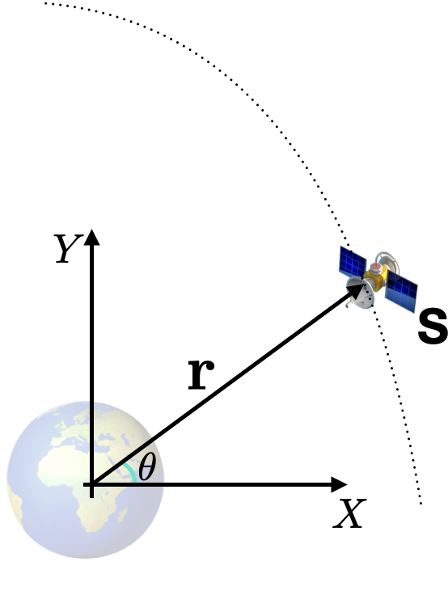
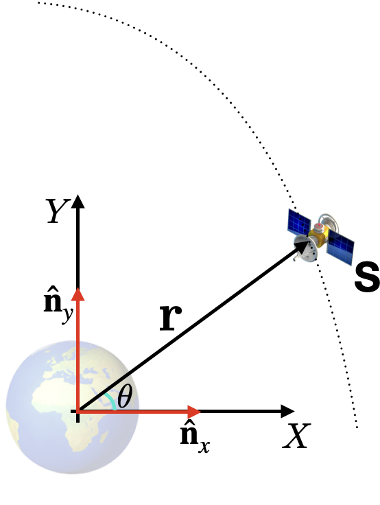

Table of Contents
Reference Frames and Vectors¶
Introduction¶
In our first set of lectures, we have reviewed vectors. One of the important topics discussed was the component form of representing a vector, which allows us to write a vector using its scalar components and some unit vectors. For example: \({\bf v}= v_1 \hat{\bf{a}}_x + v_2 \hat{\bf{a}}_y + v_3 \hat{\bf{a}}_z\) is the representation of a vector \({\bf v}\) using the scalars \(v_i\) \((i=1,2,3)\) and a set of unit vectors \(\hat{\bf{a}}_j\) \((j=x,y,z)\). The set of unit vectors are called a reference frame, which we shall call \(A\), for the sake of this notebook- here, we also assume that these vectors have the sspecial property of being orthogonal.
Engineering dynamicists utilize their understanding of vectors to generate models that describe the motion of engineering systems. Some exciting and important examples of systems analysed using dynamics models are rockets, spacecraft, aircraft, drones, etc. As these systems are quite complex, dynamicists have developed tools that facilitate their modeling. Another important aspect of a dynamicist’s work is in the analyses of motion behaviours using these models. This also helps in exploring aspects of the design space to improve the performance of machines (e.g., robots) or aid in understanding anomalies and failures in engineering systems.
The objective of this notebook is to introduce you to some fundamental tools that facilitate such complex mathematical modeling of systems using computers. To do so, we will use a computer’s ability to perform algebra (woking with symbols)- this is enabled by a symbolic library known as SymPy, which is written in Python. Here, we will learn not only to express a vector in its symbolic form but also to perform routine vector algebra operations (addition and multiplication) in SymPy. This will allow us to eventually develop a model that describes the motion of a spacecraft orbiting the Earth.
Initial program setup: get the necessary tools!¶
As with most programming languages, the first few lines are dedicated to
importing tools that allow us to achieve this notebook’s objective.
For this, we will use SymPy’s symbols and ReferenceFrame.
from sympy import symbols
from sympy.physics.mechanics import ReferenceFrame
Create the vector ‘v’¶
We will first create the scalar components of the vector \(\bf v\), i.e.,
\(v_i\) \((i=1,2,3)\). It is good practice to declare symbols as real to
encourage SymPy to provide simpler results- this is why we have included
real=True.
v1, v2, v3 = symbols('v1, v2, v3', real=True)
Then, we create a reference frame- this provides the orthogonal unit vectors for constructing general vectors such as \(\bf v\).
A = ReferenceFrame('A')
The three orthonormal vectors (orthogonal unit vectors) associated with this
frame \(A\) can be accessed by appending either .x, .y, or .z to it. Let us
examine each of these.
A.x
A.y
A.z
Now, we can construct the vector \(\bf v\) by multiplying its scalars by the
frame’s
associated unit vectors. This vector will be stored, as shown below, in the
variable
v.
v = v1*A.x + v2*A.y + v3*A.z
The vectors stored in variable v can be displayed:
v
Now, a little bit of Python and computer programming terminology.
v and A appear to the left hand side of = in the code snippets above,
which
attaches these two letters to a Vector or a ReferenceFrame. In other words,
v and A are containers that store something. In computing, such containers
are
typically referred to as variables.
If we are unsure of or wish to learn what kind (or type) of object a variable holds, Python allows us to request this (and other) details by using a question mark, as below:
v?
The first line of the newly opened window tells us that v is a Vector. This
is
cool because we have just used symbols and ReferenceFrame to write a vector
in
its component form using abstract symbols and not numbers!
You may now close thenewly opened window in the bottom half of your browser.
Some operations on ‘v’¶
As we are aware, vectors have some important properties. One of these is its
magnitude and SymPy allows us to access this information easily.
The scalar magnitude of v can be found by:
v.magnitude()
A unit vector in the same direction as \(\mathbf{v}\) can also be found with:
v.normalize()
which is equivalent to:
v / v.magnitude()
Vector algebra¶
Addition¶
To add a vector ${\bf w}= w_1 \hat{\bf{a}}_x + w_2 \hat{\bf{a}}_y
w_3 \hat{\bf{a}}_z$, we do the following:
w1, w2, w3 = symbols("w1, w2, w3", real=True)
w = w1*A.x + w2*A.y + w3 * A.z
w
Then, the two vectors can be added:
v + w
Activity:¶
Can you write a snippet of code to add \(\bf v\) to itself?
# Enter your code below
v+v
Can you create a new vector \(\bf u\) expressed in a new reference frame \(B\)?
# Enter your code below
B = ReferenceFrame('B')
u1, u2, u3 = symbols("u1, u2, u3", real=True)
u = u1*B.x + u2*B.y + u3 * B.z
What is the result of adding \(\bf u\) to \(\bf v\)? Does this make sense?
# Enter your code below
u + v
Multiplication¶
It is quite straightforward to multiply a vector by a scalar. For example:
Scalar product¶
10 * v
Dot product¶
Compute the dot product between two vectors:
v.dot(v)
Cross product¶
Similarly, one can also take the cross products between two vectors:
v.cross(v)
Activity:¶
Can you write code to compute the dot and cross products product between \(\bf v\) and \(\bf w\)?
# Enter your code below
v.cross(w)
Outer product¶
You can also compute the outer product, which creates a dyadic (a reference frame aware representation of a 3D tensor)
v.outer(w)
Additional useful features¶
The matrix form of both vectors and dyadics can be found if the frame of interest is provided.
v.to_matrix(A)
d = v.outer(w)
d.to_matrix(A)
You can find all of the scalar variables present in a vector with
free_symbols().
v.free_symbols(A)
{v1, v2, v3}
Partial derivatives of vectors can be computed in the specified reference frame.
v.diff(v2, A)
You can substitute numerical values for scalar expressions.
v.subs({v1: 1.34, v2: 5})
Note that this does not alter the vector or the scalars
v
v1
v2
Thus, we can make use of the new subsitutions by assigning it to a different
variable.
Let’s call that z.
z = v.subs({v1: 1.34, v2: 5})
z.subs({5: v2})
Activity¶
Run the following code snippet
m = v.to_matrix(A)
m.subs({v1: 5})
Now, probe what type of object m. In other words, enter m? in the code cell
below and identify what its Type says:
#Enter your code below
m?
Activity: Locating a spacecraft¶
So far, we have learned how to do use ReferenceFrame and symbols to write
vectors and perform some algebra. However, vectors are very useful in defining
physical problems, such as developing models for spacecraft motion.
So, now, how about we try to work on translating a physical concept to a
mathematical model?
The figure below shows a spacecraft, \(\text S\), orbiting the Earth. The orbit is shown as a dotted curve. The X-Y plane is rigidly fixed to the Earth and will be used to locate the spacecraft.

A position vector \(\bf r\) is used to locate \(\text S\). The tail of \(\bf r\) is at the origin of the X-Y frame and the head of \(\bf r\) is at \(\text S\). This vector subtends an angle \(\theta\) with the x-axis of the coordinate system.

A reference frame \(N\) is introduced to allow the definition of the \(\bf r\). The unit vectors of this reference frame are \(\hat{\bf{n}}_x\), \(\hat{\bf{n}}_y\).

Task definition 1¶
Your objective is to define the position of this spacecraft in component form
using the information provided above. First, write out the proposed answer by
hand. And then write the necessary lines of code to define this vector using
SymPy’s symbols and ReferenceFrame. You will also need to use the sin and
cos functions; these have been imported below for you.
Hint: I suggest defining a symbol \(r\), which is the magnitude of the vector \(\bf r\).
from sympy import sin, cos
### BEGIN SOLUTION
N = ReferenceFrame('N')
r, theta = symbols('r, theta', real=True)
R_pos_vec = r*cos(theta)*N.x + r*sin(theta)*N.y
### END SOLUTION